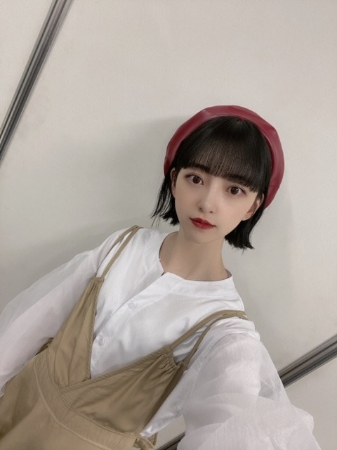
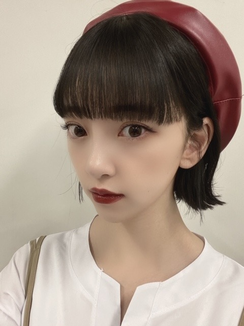

2020/0905Sat#TGC
TGC見てくださりありがとうございました〜！
17kg さんのステージに
出させていただきました☺︎
バレッタぶりだから7.8ねんぶりに
前髪をぱっつん重めにしてみました
髪色もブルーがかった黒髪
どうですか、、ね？



口は秋冬っぽくLiKEYのブラウンと赤の口紅を
混ぜて塗りました
秋ですな〜〜〜
みおボブにするには
毛先は切りっぱなし風
前髪は重めぱっつん
暗髪
です^ - ^
女の子の皆さま、ぜひ秋冬一緒にしましょう^ - ^
ではでは〜
2020/09/05 21:00
コメント(263)
ブログ更新ありがとう！
TGCお疲れ様です！
めちゃくちゃ可愛かったよ！
服もベレー帽もすごい似合ってるね！
目の表情も力強い感じですごく魅せられた！
本当に堀ちゃんの目の表情が大好きです！
TGCお疲れ様です！
めちゃくちゃ可愛かったよ！
服もベレー帽もすごい似合ってるね！
目の表情も力強い感じですごく魅せられた！
本当に堀ちゃんの目の表情が大好きです！
更新ありがとう
一気に秋色に染まったね。
でも、可愛いには間違いない。
未央奈ちゃん、大好き❤️
一気に秋色に染まったね。
でも、可愛いには間違いない。
未央奈ちゃん、大好き❤️
堀ちゃんブログ更新ありがとう！
TGC見てたよ お疲れ様でした！
前髪 重めぱっつん久々だね
秋っぽい衣装と赤のベレー帽かな？似合ってたよ
夏が終わるね
ではでは〜
TGC見てたよ お疲れ様でした！
前髪 重めぱっつん久々だね
秋っぽい衣装と赤のベレー帽かな？似合ってたよ
夏が終わるね
ではでは〜
未央奈こんばんは‼️
TGC見ました 綺麗だった…。
綺麗だった…。
未央奈のボブ姿とっても好きです
メイクも素敵です
バレッタの時よりずっと成長した姿をこれからも見せてください
TGC見ました
未央奈のボブ姿とっても好きです
メイクも素敵です
バレッタの時よりずっと成長した姿をこれからも見せてください
未央奈ちゃんおつかれさまです！
最近わたしも黒髪のボブに切りました！
みおボブです
これから未央奈ちゃんの服やメイクを参考にして
ボブ楽しみたいです☺︎
ではでは〜
最近わたしも黒髪のボブに切りました！
みおボブです
これから未央奈ちゃんの服やメイクを参考にして
ボブ楽しみたいです☺︎
ではでは〜
みおボブにしたかったので教えてくださり感謝感激です
ブログ更新ありがとうございます。
秋ですね！ もうあとちょっとで2020年も終わるんですよねー
少し前まではやっと元日を迎えたばっかなのに時って経つの早いですね・・。
まぁ来年も頑張ってください！
秋ですね！ もうあとちょっとで2020年も終わるんですよねー
少し前まではやっと元日を迎えたばっかなのに時って経つの早いですね・・。
まぁ来年も頑張ってください！
めちゃめちゃかわいい
暗めの赤リップ似合うの羨ましい！
ボブしたいけど髪短かったら幼く見えるからなー
迷う〜
けど一緒にボブにしたいな！
暗めの赤リップ似合うの羨ましい！
ボブしたいけど髪短かったら幼く見えるからなー
迷う〜
けど一緒にボブにしたいな！
お疲れ様なのです└(ﾟ∀ﾟ└) (┘ﾟ∀ﾟ)┘
未央ボブいいね！似合ってます！大人な感じです！
更新ありがとう❤
TGCお疲れ様です。
髪型も服も似合っててかわいい～❤
未央奈ちゃんの写真見て癒されました
体調気をつけてくださいね
TGCお疲れ様です。
髪型も服も似合っててかわいい～❤
未央奈ちゃんの写真見て癒されました
体調気をつけてくださいね
こんばんは。ブログ更新ありがとうございます。
前髪重めぱっつん可愛いですね！！バレッタの頃から比べると、ポニーテールがボブにと、だいぶイメージ変わりました。今の方が大人可愛いですね。
ではまた。
前髪重めぱっつん可愛いですね！！バレッタの頃から比べると、ポニーテールがボブにと、だいぶイメージ変わりました。今の方が大人可愛いですね。
ではまた。
みおちゃんTGCお疲れさま！
パッツン重めの前髪もかーわいい♡
これからの秋メイクも楽しみにしてるね。
パッツン重めの前髪もかーわいい♡
これからの秋メイクも楽しみにしてるね。
みおなちゃん更新ありがとう
TGCお疲れ様‼️
カッコ良かったし、可愛かった‼️
TGCお疲れ様‼️
カッコ良かったし、可愛かった‼️
未央奈さん、こんばんは
口紅の発色が秋らしくて
いい感じですね
帽子と口紅の色がリンクして
オシャレです(^_^)
前髪重めぱっつん
またやってくださいな
今日も1日お疲れ様でした
口紅の発色が秋らしくて
いい感じですね
帽子と口紅の色がリンクして
オシャレです(^_^)
前髪重めぱっつん
またやってくださいな
今日も1日お疲れ様でした
重めぱっつんすごく似合ってたよ！！バレッタの時より大人っぽさと綺麗さと可愛さがグンと上がって垢抜けたなぁって見惚れてみてた笑笑 改めて思ったけど、未央奈ちゃんが1番好きだー！！！メイクは秋っぽくて、ベレー帽と外ハネで可愛らしい感じで、お洋服もダボッとした感じでより華奢な感じが引き立ってた！！！クールな表情イケメンすぎた！！！！バイト終わってからの時間でちょうど未央奈ちゃんを見れて本当に嬉しかった！！#堀未央奈TGCでみんなが応援コメント載せてるから見てみて！今日は本当にお疲れ様！！私もインターンだから黒髪未央奈ちゃんとお揃いにしようかな笑笑 今髪伸ばしてるけど切りたい！笑笑 未央奈ちゃんがずっと憧れです！！
ももんが
ももんが
みおな
なるほどー。
確かに前髪重めだね。
バレッタ以来なのねー。
なるほどー。
確かに前髪重めだね。
バレッタ以来なのねー。
ブログ更新ありがとう！！
TGCめっちゃ可愛かった！重めぱっつんも可愛い！！
ボブすごく似合ってるし、好き！！
今日はお疲れ様でした！
これからも応援してます！
TGCめっちゃ可愛かった！重めぱっつんも可愛い！！
ボブすごく似合ってるし、好き！！
今日はお疲れ様でした！
これからも応援してます！
こんばんは。
可愛かったですよ。
赤のベレー帽がよく似合い、リップなども赤が映えましたし、気持ち入ってましたよね。
ブルーがかった黒髪もオシャレで見事です。
パッツン前髪も可愛いし、似合ってますよ。
可愛い写真をありがとうございます。
配信は画質が粗いので、嬉しいです、可愛いです。
癒されます、コレクションにさせていただきます。
オシャレで可愛い未央奈さんを想うだけでも幸せですよ。
秋へのステップ、メイクも服装ももっともっと楽しませてくださいね。
みおボブ増えて欲しいです。
お身体にはお気をつけてくださいね。
お疲れのところ、更新ありがとうございました。
大好きですよ！
頑張って行きましょう。
可愛かったですよ。
赤のベレー帽がよく似合い、リップなども赤が映えましたし、気持ち入ってましたよね。
ブルーがかった黒髪もオシャレで見事です。
パッツン前髪も可愛いし、似合ってますよ。
可愛い写真をありがとうございます。
配信は画質が粗いので、嬉しいです、可愛いです。
癒されます、コレクションにさせていただきます。
オシャレで可愛い未央奈さんを想うだけでも幸せですよ。
秋へのステップ、メイクも服装ももっともっと楽しませてくださいね。
みおボブ増えて欲しいです。
お身体にはお気をつけてくださいね。
お疲れのところ、更新ありがとうございました。
大好きですよ！
頑張って行きましょう。
どうですかね？
かわいいにきまってる！
かわいいにきまってる！
TGCお疲れ様でした\ ♩ /
ランウェイ歩くみおなちゃんかっこよかったです！
韓国好きなみおなちゃんにイチナナのお洋服すっごい似合ってました！！
おしゃれさんなみおなちゃんのこと、私も見習います！！
ブログ更新ありがとう〜！！
ランウェイ歩くみおなちゃんかっこよかったです！
韓国好きなみおなちゃんにイチナナのお洋服すっごい似合ってました！！
おしゃれさんなみおなちゃんのこと、私も見習います！！
ブログ更新ありがとう〜！！
TGC見たよ！お疲れ様！！
早く、生でランウェイ歩いてる未央奈が見たいです
ファッションとか、髪型とか参考にします❤︎
今日はゆっくり休んでね！体調には気をつけてください☺︎
早く、生でランウェイ歩いてる未央奈が見たいです
ファッションとか、髪型とか参考にします❤︎
今日はゆっくり休んでね！体調には気をつけてください☺︎
ずいぶん可愛く写ってんなこれ、
笑
笑
未央奈～ こんにちは
連日のブログ更新ありがとうございます。
TGC、おつかれさまでした。どんな髪型しても可愛いのが未央奈ですが、前髪に重みですね。なるほど‥‥。
でも、ファッションの世界では早くも「秋から冬」なんですね。季節の変化早〜い。
とはいえ、現実にはまだまだ「残暑」が続きます。台風のことも心配です。くれぐれも体調管理、気をつけてくださいね。
連日のブログ更新ありがとうございます。
TGC、おつかれさまでした。どんな髪型しても可愛いのが未央奈ですが、前髪に重みですね。なるほど‥‥。
でも、ファッションの世界では早くも「秋から冬」なんですね。季節の変化早〜い。
とはいえ、現実にはまだまだ「残暑」が続きます。台風のことも心配です。くれぐれも体調管理、気をつけてくださいね。
お疲れ様でした
未央奈ちゃんブログ更新ありがとう！！
TGCの17キログラムリアタイで見れました！！
未央奈ちゃん出てきた時にいつもと髪型違う！メイク違う！雰囲気違う！かわいい！！かっこいい！って1人で騒いでました。笑
未央奈ちゃんが自粛中にメイク紹介とかしてくれていてその時にブラウンリップが気になって使いだして最近のお気に入りなので今日のランウェイで見られて嬉しかったです！
外ハネの耳かけもかわいいし、ワインレッドっぽいベレー帽も素敵でした！
乃木坂46でライブをしている時はニコニコでキラキラしていて、今日のモデルとしての未央奈ちゃんはかっこよくて凛としていて大人な女性って感じがしてさらに憧れが強くなりました
久々の黒髪も重めのパッツンもお似合いです！
あ！生誕祭グッズのトートバック購入させて頂きました！
届くの楽しみだなぁ⸜❤︎⸝
学校に持っていこうと思います！
いつもありがとうございます
だいすき！
あ！今日のランウェイの投稿タグ付けしてInstagramで投稿します！
TGCの17キログラムリアタイで見れました！！
未央奈ちゃん出てきた時にいつもと髪型違う！メイク違う！雰囲気違う！かわいい！！かっこいい！って1人で騒いでました。笑
未央奈ちゃんが自粛中にメイク紹介とかしてくれていてその時にブラウンリップが気になって使いだして最近のお気に入りなので今日のランウェイで見られて嬉しかったです！
外ハネの耳かけもかわいいし、ワインレッドっぽいベレー帽も素敵でした！
乃木坂46でライブをしている時はニコニコでキラキラしていて、今日のモデルとしての未央奈ちゃんはかっこよくて凛としていて大人な女性って感じがしてさらに憧れが強くなりました
久々の黒髪も重めのパッツンもお似合いです！
あ！生誕祭グッズのトートバック購入させて頂きました！
届くの楽しみだなぁ⸜❤︎⸝
学校に持っていこうと思います！
いつもありがとうございます
だいすき！
あ！今日のランウェイの投稿タグ付けしてInstagramで投稿します！
重めの前髪ぱっつんも
可愛いベレー帽未央奈さん
ブログ更新ありがとう⁉︎(^^)
安心、安定のランウェイ
でしたね⁉︎(^^)
楽しめました⁉︎
可愛いベレー帽未央奈さん
ブログ更新ありがとう⁉︎(^^)
安心、安定のランウェイ
でしたね⁉︎(^^)
楽しめました⁉︎
こんばんは
TGCお疲れ様でしたー！！
17kgさんステージ格好良いです！
ランウェイ姿とても誇らしいです✨
前髪ぱっつん重めもフレッシュです！
バレッタの頃よりは大人っぽいです♪
でもとっても大人可愛いらしいです！
秋冬らしい口紅の色も効いてますね✌
みおボブもうトレードマークですし、
メイクや髪型でイメージ変わります☆
TGC終わり直ぐで臨場感たっぷりです！
秋冬ファッションも楽しみにしてます♡☺
TGCお疲れ様でしたー！！
17kgさんステージ格好良いです！
ランウェイ姿とても誇らしいです✨
前髪ぱっつん重めもフレッシュです！
バレッタの頃よりは大人っぽいです♪
でもとっても大人可愛いらしいです！
秋冬らしい口紅の色も効いてますね✌
みおボブもうトレードマークですし、
メイクや髪型でイメージ変わります☆
TGC終わり直ぐで臨場感たっぷりです！
秋冬ファッションも楽しみにしてます♡☺
堀さんは、黒も茶系も、おそらく金髪も似合います。
だって、もともと美人で可愛いからです。
堀さんの美人&可愛いは、ちょっと誰も真似できないというか。
おじさんは男なんで、白髪染めします。
お疲れ様でした！！
だって、もともと美人で可愛いからです。
堀さんの美人&可愛いは、ちょっと誰も真似できないというか。
おじさんは男なんで、白髪染めします。
お疲れ様でした！！
TGCお疲れ様です。
めっちゃかわいいー！
未央奈のボブには誰も勝てません！
みおボブ最高です
未央奈のボブには誰も勝てません！
みおボブ最高です
未央奈！
お疲れ様！
お疲れ様！
私まだあんまりファッション詳しくないけど、メイクも帽子もthe！秋！ってかんじの色味で可愛い！！ブログだとよりメイクがしっかり見えるから良さが伝わってきます〜☺︎
明日美容院に行くのでボブにしてきます！！私は顔の形的に丸っこいボブのが合うので、堀ちゃんとおそろにはできないけど
明日美容院に行くのでボブにしてきます！！私は顔の形的に丸っこいボブのが合うので、堀ちゃんとおそろにはできないけど
未央奈さん、ブログ更新ありがとう。どこにでもいるおっさんです。
TGCお疲れ様でした。
髪形めっちゃいいよ。帽子も活きてる。
ではでは～
ひでき
TGCお疲れ様でした。
髪形めっちゃいいよ。帽子も活きてる。
ではでは～
ひでき
未央奈ちゃん、こんばんは♪
久しぶりにコメントをします。
17キロさんという人がいるのですね。
僕は体重は６５キロです。
２４時間テレビでの盆踊りを見ました。
僕の地域の祭りは、焼き鳥やラムネ、アイス、
たこ焼きなどの屋台がありました
乃木坂のダンスと比べてゆっくりとした動き
なのでやりやすかったです。
最近は映画は見てません。
車で車を追いかけるようなアクション映画を
観たいです。
近所の図書館の店員さんに、
「こんにちは」と言えるようになりました。
図書館の店員と「こんにちは」というやり取りが
握手会のようで楽しいです。
今回はここまでにするね☆
おやすみね。
久しぶりにコメントをします。
17キロさんという人がいるのですね。
僕は体重は６５キロです。
２４時間テレビでの盆踊りを見ました。
僕の地域の祭りは、焼き鳥やラムネ、アイス、
たこ焼きなどの屋台がありました
乃木坂のダンスと比べてゆっくりとした動き
なのでやりやすかったです。
最近は映画は見てません。
車で車を追いかけるようなアクション映画を
観たいです。
近所の図書館の店員さんに、
「こんにちは」と言えるようになりました。
図書館の店員と「こんにちは」というやり取りが
握手会のようで楽しいです。
今回はここまでにするね☆
おやすみね。
おつかれん
掘ちゃん。こんばんわ。初めまして。TGC見たよ。 お疲れ様です。乃木坂の、みなさん、素敵でしたよ。✨✨。ステージ衣装とは違った感じが良かっよ✨。じゃあ、おやすみ～
ぱっつん好き！バレッタの時みたいに、ひっつめポーニテールだったらもっと好き
未央奈さん、今回の髪型すごくよいです。ボブがよく似合ってます。お洋服もすてき。
秋になっていきますね。秋の可愛く美しい未央奈が見れると思うとワクワクします。
秋になっていきますね。秋の可愛く美しい未央奈が見れると思うとワクワクします。
TGCお疲れ様！
可愛い！
可愛い！
ブログ更新ありがとう！
TGCお疲れ様でした～
秋らしく、クールなファッションや髪型ですね！
大人らしさが出て素敵です、、
TGCお疲れ様でした～
秋らしく、クールなファッションや髪型ですね！
大人らしさが出て素敵です、、
お人形さん、可愛すぎる。
未央奈ちゃんTGCお疲れ様でした〜！
見てたよ〜！すっごくかっこよかったです！
未央奈ちゃんはお仕事の種類によって魅せてくれる表情が違っていつも楽しませてくれるし、女の子の憧れです
お仕事おつかれさまでした^-^
見てたよ〜！すっごくかっこよかったです！
未央奈ちゃんはお仕事の種類によって魅せてくれる表情が違っていつも楽しませてくれるし、女の子の憧れです
お仕事おつかれさまでした^-^
未央奈さんブログ更新ありがとう
TGCお疲れ様でした
未央奈さんのブログが
秋の訪れを感じさせてくれます
天候が荒れていますが
体調管理にも気をつけてください！！
応援してます！
次のブログ更新も楽しみにしてます
TGCお疲れ様でした
未央奈さんのブログが
秋の訪れを感じさせてくれます
天候が荒れていますが
体調管理にも気をつけてください！！
応援してます！
次のブログ更新も楽しみにしてます
TGCお疲れさまです！！
口紅のお色がめちゃくちゃ可愛い
ベレー帽の色とも合ってて好きです
秋は短くてあっという間なので秋服ってあまり持ってないんですよね、、
未央奈ちゃんの秋服コーデ参考にしたいので、たくさんお洋服のお写真みたいです！！
口紅のお色がめちゃくちゃ可愛い
ベレー帽の色とも合ってて好きです
秋は短くてあっという間なので秋服ってあまり持ってないんですよね、、
未央奈ちゃんの秋服コーデ参考にしたいので、たくさんお洋服のお写真みたいです！！
遅くなったけど、
未央奈、ブログ更新アリガトウ!
TGCお疲れ様でした!
その口紅の色大人っぽく感じたし髪型変わるとドキッとするのは自分だけかな?
また色んな未央奈を見せてね!
またヨロシクね
未央奈、ブログ更新アリガトウ!
TGCお疲れ様でした!
その口紅の色大人っぽく感じたし髪型変わるとドキッとするのは自分だけかな?
また色んな未央奈を見せてね!
またヨロシクね
かわいいー
TGCお疲れ様です。
髪型も髪色も似合っててカワイイと思うよ
混ぜて塗った口紅の色もいいと思うし好きです❤️
髪型も髪色も似合っててカワイイと思うよ
混ぜて塗った口紅の色もいいと思うし好きです❤️
未央奈！ブログ更新お疲れ～
秋ですな～～(笑)
TGCお疲れ様(о´∀`о)
可愛い～
ゆっくり休んでね～
秋ですな～～(笑)
TGCお疲れ様(о´∀`о)
可愛い～
ゆっくり休んでね～


めっちゃかわいい！